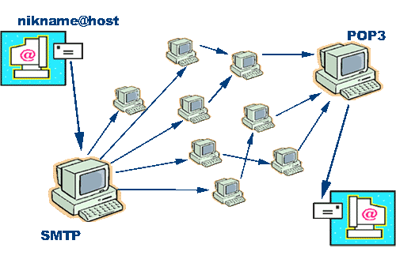

Коммуникационные службы
Может существовать только два режима общения в сети: режим непосредственного общения в реальном масштабе времени, когда пользователи во время общения соединены между собой. Аналогом такого общения является разговор по телефону. Иногда для обозначения такого режима используется термин on-line. Другим режимом является режим отложенного общения (off-line). Примером такого общения в быту является отправка письма или телеграммы.
Электронная почта - это наиболее старая и одна из самых массовых служб Сети. Электронная почта работает на основе почтового протокола POP (Post Office Protocol). Принцип его действия простой. В почтовой программе вы пишете письмо и отправляете его на сервер своей исходящей почты. Затем письмо начинает путешествовать по Сети, пока не доберется до сервера входящей почты адресата. Там письмо хранится, пока получатель не соединится с Интернетом и не загрузит его (письмо) в свою почтовую программу с сервера входящей почты. После чего, если письмо его заинтересует, а дресат напишет вам ответ.

Ответ сначала отправляется на сервер исходящей почты вашего адресата, потом путешествует по Сети, пока не доберется до вашего сервера входящей почты. Вам остается только войти в Интернет и загрузить ответ на свой компьютер с помощью почтовой программы. Электронная почта на данный момент является самым удобным, дешевым и быстрым способом обмена информацией. Скорость доставки может изменяться от нескольких секунд до нескольких часов.